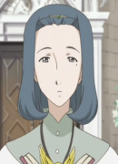

|
Ami Mizuno |
- Sailor Moon
- Sailor Moon R
- Sailor Moon R: The Movie
- Sailor Moon R: Make-Up! Sailor Senshi
- Sailor Moon S
- Sailor Moon S: The Movie
- Sailor Moon Super S: The Movie
- Sailor Moon Super S
- Sailor Moon Super S Plus: Ami's First Love
- Sailor Moon Super S Special
- Sailor Moon Sailor Stars
- Sailor Moon Sailor Stars: Hero Club
- Sailor Moon Memorial
- Sailor Moon R Memorial
- Sailor Moon S Memorial
- Sailor Moon Super S Memorial
- Sailor Moon Sailor Stars Memorial
|
Ami Mizuno/Sailor Mercury is a quiet bookworm in usagi's class. She is very intelligent and sweet. Her shy personality masks a passion for knowledge and takes care of people around her. She wants to becomea doctor one day. |
 |
Keroberos |
- Cardcaptor Sakura
- Cardcaptor Sakura Movie 1
- Cardcaptor Sakura Movie 2: The Sealed Card
- Cardcaptor Sakura: Leave it to Kero-chan
- Tsubasa Chronicle 2nd Series
- Cardcaptor Sakura: Clear Card Prologue
- Cardcapter Sakura: Clear Card
|
Keroberos is the guardian of sun appointed by Clow Reed. After Clow Reed death, he chooses Sakura to be the next master od the Clow Cards. He becomes good friend with Sakura and her friend Tomoyo. He is bossy, demanding and a glutton but he cares for Sakura. He loves video games and sweets. Aya Hisakawa voices Kero false form. |
|  |
Portia |
|
Portia is Romeo's mother. She is a kind and intelligent woman who prays for Romeo. She greets Romeo with a smile. |